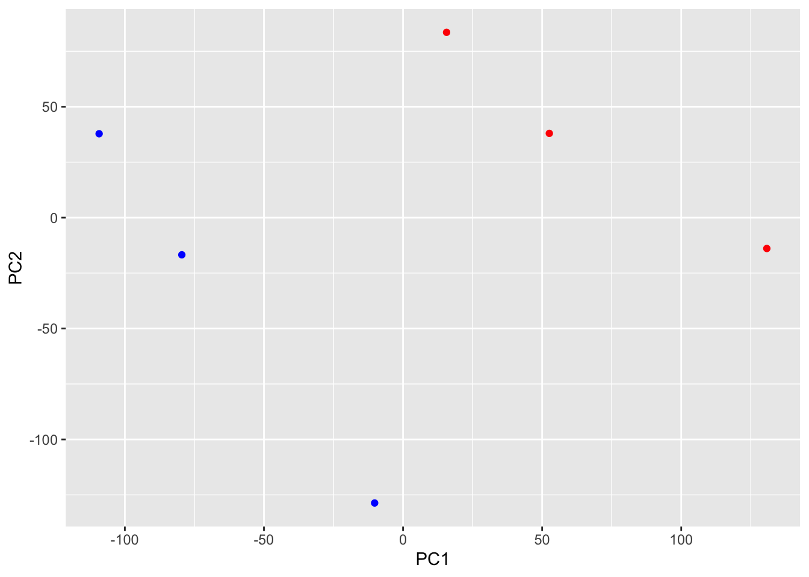
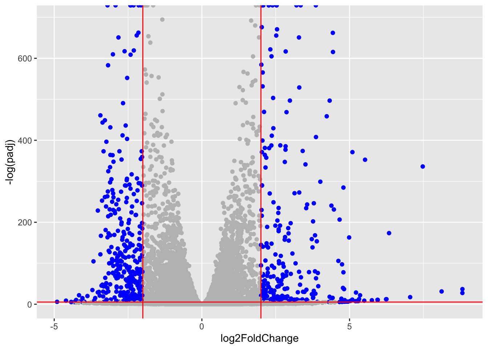

counts <- read.csv("GSE37704_featurecounts.csv", row.names = 1)
metadata <- read.csv("GSE37704_metadata.csv")Class14: RNAseq mini project
Background
The data for for hands-on session comes from GEO entry: GSE37704, which is associated with the following publication:
Trapnell C, Hendrickson DG, Sauvageau M, Goff L et al. “Differential analysis of gene regulation at transcript resolution with RNA-seq”. Nat Biotechnol 2013 Jan;31(1):46-53. PMID: 23222703
The authors report on differential analysis of lung fibroblasts in response to loss of the developmental transcription factor HOXA1.
Data Import
Reading in the counts and the metadata
head(counts) length SRR493366 SRR493367 SRR493368 SRR493369 SRR493370
ENSG00000186092 918 0 0 0 0 0
ENSG00000279928 718 0 0 0 0 0
ENSG00000279457 1982 23 28 29 29 28
ENSG00000278566 939 0 0 0 0 0
ENSG00000273547 939 0 0 0 0 0
ENSG00000187634 3214 124 123 205 207 212
SRR493371
ENSG00000186092 0
ENSG00000279928 0
ENSG00000279457 46
ENSG00000278566 0
ENSG00000273547 0
ENSG00000187634 258metadata id condition
1 SRR493366 control_sirna
2 SRR493367 control_sirna
3 SRR493368 control_sirna
4 SRR493369 hoxa1_kd
5 SRR493370 hoxa1_kd
6 SRR493371 hoxa1_kdTidy and verify data
Q. How many genes are in this dataset?
nrow(counts)[1] 19808Q. How many control and knockdown experiments are there?
table (metadata$condition)
control_sirna hoxa1_kd
3 3 Q. Does the
metadatamatch to thecountdata
all (colnames(counts) == metadata$id)Warning in colnames(counts) == metadata$id: longer object length is not a
multiple of shorter object length[1] FALSEcolnames(counts)[1] "length" "SRR493366" "SRR493367" "SRR493368" "SRR493369" "SRR493370"
[7] "SRR493371"metadata$id[1] "SRR493366" "SRR493367" "SRR493368" "SRR493369" "SRR493370" "SRR493371"###Fix countdata to match the coldata/metadata
newcounts <- counts[, -1]
dim(newcounts)[1] 19808 6all (colnames(newcounts) == metadata$id)[1] TRUERemove zero count genes
to.keep <- rowSums(newcounts) != 0
countData <- newcounts[to.keep, ]
head(countData) SRR493366 SRR493367 SRR493368 SRR493369 SRR493370 SRR493371
ENSG00000279457 23 28 29 29 28 46
ENSG00000187634 124 123 205 207 212 258
ENSG00000188976 1637 1831 2383 1226 1326 1504
ENSG00000187961 120 153 180 236 255 357
ENSG00000187583 24 48 65 44 48 64
ENSG00000187642 4 9 16 14 16 16PCA quality control
We can use prcomp() function.
pc <- prcomp( t(countData), scale = T)
summary(pc)Importance of components:
PC1 PC2 PC3 PC4 PC5 PC6
Standard deviation 87.7211 73.3196 32.89604 31.15094 29.18417 7.387e-13
Proportion of Variance 0.4817 0.3365 0.06774 0.06074 0.05332 0.000e+00
Cumulative Proportion 0.4817 0.8182 0.88594 0.94668 1.00000 1.000e+00metadata$condition[1] "control_sirna" "control_sirna" "control_sirna" "hoxa1_kd"
[5] "hoxa1_kd" "hoxa1_kd" mycols <- c( rep("blue", 3), rep("red", 3) )Color by “control” (blue) or “kd” (red)
library(ggplot2)
ggplot(pc$x) +
aes(PC1, PC2) +
geom_point(col = mycols)
Q. How many genes do we have left after filtering?
nrow(countData)[1] 15975DESeq analysis
library(DESeq2)Warning: package 'DESeq2' was built under R version 4.3.3Warning: package 'S4Vectors' was built under R version 4.3.2Warning: package 'GenomeInfoDb' was built under R version 4.3.3Warning: package 'SummarizedExperiment' was built under R version 4.3.2Warning: package 'matrixStats' was built under R version 4.3.3Setup the DESeq input object
dds <- DESeqDataSetFromMatrix(countData = countData,
colData = metadata,
design = ~condition)Warning in DESeqDataSet(se, design = design, ignoreRank): some variables in
design formula are characters, converting to factorsRun DESeq
dds <- DESeq(dds)estimating size factorsestimating dispersionsgene-wise dispersion estimatesmean-dispersion relationshipfinal dispersion estimatesfitting model and testingExtract results
res <- results(dds)head(res)log2 fold change (MLE): condition hoxa1 kd vs control sirna
Wald test p-value: condition hoxa1 kd vs control sirna
DataFrame with 6 rows and 6 columns
baseMean log2FoldChange lfcSE stat pvalue
<numeric> <numeric> <numeric> <numeric> <numeric>
ENSG00000279457 29.9136 0.1792571 0.3248216 0.551863 5.81042e-01
ENSG00000187634 183.2296 0.4264571 0.1402658 3.040350 2.36304e-03
ENSG00000188976 1651.1881 -0.6927205 0.0548465 -12.630158 1.43989e-36
ENSG00000187961 209.6379 0.7297556 0.1318599 5.534326 3.12428e-08
ENSG00000187583 47.2551 0.0405765 0.2718928 0.149237 8.81366e-01
ENSG00000187642 11.9798 0.5428105 0.5215599 1.040744 2.97994e-01
padj
<numeric>
ENSG00000279457 6.86555e-01
ENSG00000187634 5.15718e-03
ENSG00000188976 1.76549e-35
ENSG00000187961 1.13413e-07
ENSG00000187583 9.19031e-01
ENSG00000187642 4.03379e-01Volcano plot
mycols <- rep("gray", nrow(res))
mycols[ abs(res$log2FoldChange) > 2 ] <- "blue"
mycols[ res$padj > 0.005] <- "gray"ggplot(res) +
aes(log2FoldChange, -log(padj)) +
geom_point(col=mycols) +
geom_vline(xintercept = c(-2, 2), col="red") +
geom_hline(yintercept = -log(0.005), col="red")Warning: Removed 1237 rows containing missing values or values outside the scale range
(`geom_point()`).
Add gene annotation
We want to add gene SYMBOL and ENTREZID values to our results object.
library("AnnotationDbi")
library("org.Hs.eg.db")columns(org.Hs.eg.db) [1] "ACCNUM" "ALIAS" "ENSEMBL" "ENSEMBLPROT" "ENSEMBLTRANS"
[6] "ENTREZID" "ENZYME" "EVIDENCE" "EVIDENCEALL" "GENENAME"
[11] "GENETYPE" "GO" "GOALL" "IPI" "MAP"
[16] "OMIM" "ONTOLOGY" "ONTOLOGYALL" "PATH" "PFAM"
[21] "PMID" "PROSITE" "REFSEQ" "SYMBOL" "UCSCKG"
[26] "UNIPROT" res$symbol <- mapIds(org.Hs.eg.db,
keys=rownames(res), # Our genenames
keytype="ENSEMBL", # The format of our genenames
column="SYMBOL", # The new format we want to add
multiVals="first")'select()' returned 1:many mapping between keys and columnsres$entrez<- mapIds(org.Hs.eg.db,
keys=rownames(res),
keytype="ENSEMBL",
column="ENTREZID", # The new format we want
multiVals="first")'select()' returned 1:many mapping between keys and columnshead(res)log2 fold change (MLE): condition hoxa1 kd vs control sirna
Wald test p-value: condition hoxa1 kd vs control sirna
DataFrame with 6 rows and 8 columns
baseMean log2FoldChange lfcSE stat pvalue
<numeric> <numeric> <numeric> <numeric> <numeric>
ENSG00000279457 29.9136 0.1792571 0.3248216 0.551863 5.81042e-01
ENSG00000187634 183.2296 0.4264571 0.1402658 3.040350 2.36304e-03
ENSG00000188976 1651.1881 -0.6927205 0.0548465 -12.630158 1.43989e-36
ENSG00000187961 209.6379 0.7297556 0.1318599 5.534326 3.12428e-08
ENSG00000187583 47.2551 0.0405765 0.2718928 0.149237 8.81366e-01
ENSG00000187642 11.9798 0.5428105 0.5215599 1.040744 2.97994e-01
padj symbol entrez
<numeric> <character> <character>
ENSG00000279457 6.86555e-01 NA NA
ENSG00000187634 5.15718e-03 SAMD11 148398
ENSG00000188976 1.76549e-35 NOC2L 26155
ENSG00000187961 1.13413e-07 KLHL17 339451
ENSG00000187583 9.19031e-01 PLEKHN1 84069
ENSG00000187642 4.03379e-01 PERM1 84808Save results
write.csv(res, file="myresults.csv")Pathway analysis
library(gage)
library(gageData)
library(pathview)KEGG
data(kegg.sets.hs)head(kegg.sets.hs, 1)$`hsa00232 Caffeine metabolism`
[1] "10" "1544" "1548" "1549" "1553" "7498" "9" Make an input vector for gage() called foldchanges that has names() attribute set to ENTREZIDs
foldchanges <- res$log2FoldChange
names(foldchanges) <- res$entrezkeggres <- gage(foldchanges, gsets = kegg.sets.hs)attributes(keggres)$names
[1] "greater" "less" "stats" head(keggres$less, 2) p.geomean stat.mean p.val q.val
hsa04110 Cell cycle 8.995727e-06 -4.378644 8.995727e-06 0.001889103
hsa03030 DNA replication 9.424076e-05 -3.951803 9.424076e-05 0.009841047
set.size exp1
hsa04110 Cell cycle 121 8.995727e-06
hsa03030 DNA replication 36 9.424076e-05pathview(gene.data=foldchanges, pathway.id="hsa04110")'select()' returned 1:1 mapping between keys and columnsInfo: Working in directory /Users/hanheejo/Desktop/1. UCSD/1. Class/7. Winter 2025/BGGN213/Class14/Class 14Info: Writing image file hsa04110.pathview.png
pathview(gene.data=foldchanges, pathway.id="hsa03030")'select()' returned 1:1 mapping between keys and columnsInfo: Working in directory /Users/hanheejo/Desktop/1. UCSD/1. Class/7. Winter 2025/BGGN213/Class14/Class 14Info: Writing image file hsa03030.pathview.png
Gene Ontology (GO)
data(go.sets.hs)
data(go.subs.hs)
# Focus just on GO Biological Process (BP)
gobpsets = go.sets.hs[go.subs.hs$BP]
gobpres = gage(foldchanges, gsets=gobpsets)head(gobpres$less) p.geomean stat.mean p.val
GO:0048285 organelle fission 1.536227e-15 -8.063910 1.536227e-15
GO:0000280 nuclear division 4.286961e-15 -7.939217 4.286961e-15
GO:0007067 mitosis 4.286961e-15 -7.939217 4.286961e-15
GO:0000087 M phase of mitotic cell cycle 1.169934e-14 -7.797496 1.169934e-14
GO:0007059 chromosome segregation 2.028624e-11 -6.878340 2.028624e-11
GO:0000236 mitotic prometaphase 1.729553e-10 -6.695966 1.729553e-10
q.val set.size exp1
GO:0048285 organelle fission 5.843127e-12 376 1.536227e-15
GO:0000280 nuclear division 5.843127e-12 352 4.286961e-15
GO:0007067 mitosis 5.843127e-12 352 4.286961e-15
GO:0000087 M phase of mitotic cell cycle 1.195965e-11 362 1.169934e-14
GO:0007059 chromosome segregation 1.659009e-08 142 2.028624e-11
GO:0000236 mitotic prometaphase 1.178690e-07 84 1.729553e-10Reactome
We can use reatome via R or via their fancy new website interface. The web interface wants a set of ENTREZ ID values for your genes of interest. Let’s generate that.
inds <- abs(res$log2FoldChange) >= 2 & res$padj <=0.05
top.genes <- res$entrez[inds]write.table(top.genes, file="top_genes.txt", row.names=FALSE, col.names=FALSE, quote=FALSE)